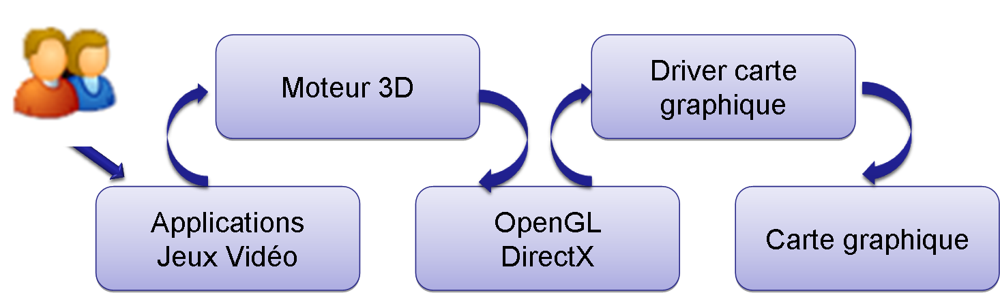

J’ai décidé d’aborder l’évolution du moteur graphique au travers du jeu vidéo.
J’ai choisi ce sujet car je souhaite m’orienter vers une formation sur l’ingénierie de la 3 D et du jeu vidéo.
I – Qu’est-ce qu’un moteur graphique ou moteur de jeu.
C'est un ensemble de fonctions permettant la représentation d’objets dans un monde 3D, leur manipulation et leur affichage. Il permet la gestion simplifiée des effets graphiques tels que les effets d'ombre, d'eau, de ciel ou de reflets.. Il permet de se passer de la complexité de la gestion d'objets 3D. En effet il représente l'intermédiaire entre les librairies bas niveau tel que OpenGL, Web GL ou DirectX et l'utilisation du moteur. Leur développement coûte cher en développement.
En clair, un moteur 3D est "une grosse boite gérant tout l’aspect visuel d’un programme de manière transparente pour l’utilisateur".
Source : http://igm.univ-mlv.fr/~dr/XPOSE2010/Moteurs3D/generalites.htmlII - Fonctionnalités
Les principales fonctionnalités d'un moteur 3D résident dans :
- l'affichage des personnages, bâtiments et paysages en 3D
- le chargement des textures d’objets
- la gestion des lumières et des ombres
- l'utilisation d'une ou plusieurs caméras
- la création des effets de brouillards, flammes, fumées, ciel, eau...
- Ils permettent de gérer la physique de manière simplifiée.
Le choix d’un moteur 3D se fera donc en fonction des fonctionnalités et rendus souhaités.
III - Exploitations
Les moteurs 3D sont de plus en plus utilisés aujourd'hui.Par exemple, on en retrouve dans :
- les moteurs de jeux vidéo
- les logiciels de modélisation 3D professionnel payant (autodesk Maya) ou gratuit (Blender)
- les logiciel d’animation cinématographique
- l'imagerie médicale
- les logiciels de simulation
IV – Evolution des moteurs graphiques dans le jeu vidéo
Voici la liste des meilleurs moteurs de jeu actuel :
Je vais m’intéresser à l’évolution de UNREAL ENGINE afin de montrer le réel intérêt de ce moteur de jeu et qu’est-ce qui a motivé son évolution.
source 1 source 21998 : 1ère version du moteur de jeu Unreal developpé par Epic Games: il permettait de personnaliser le contenu du jeu. Les graphismes sont excellents et le moteur de jeu est une réussite.
Début 2000 : L'Unreal Engine 2 va quant à lui avoir la flexibilité qui permet de non seulement réaliser des jeux FPS de très grande qualité graphique, mais va aussi permettre la création de n'importe quel type de jeu vidéo et c'est grâce à ça que de nombreux studios vont vouloir acquérir la licence Unreal Engine 2 pour concevoir de nouveaux jeux.
2005 : Unreal Engine 3 : Le kit de développement permet comme son prédécesseur, la possibilité importante de création, qui le distingue des autres moteurs, que ce soit pour le contenu comme pour le code source, plusieurs outils permettent de modifier et de créer des scripts, la physique dans le jeu, les cinématiques, les environnements et les animations des visages, bref, un moteur ultra complet.
2014 : Unreal Engine 4 utilisera des technologies pour réaliser des jeux en 2D, des jeux mobiles, utiliser la réalité virtuelle. La multiplication des supports disponibles est aussi un argument très convaincaints pour les développeurs de jeux vidéo et de là à dire que l'Unreal Engine tue la créativité, il n'y a qu'un pas, mais c'est assez difficile à dire tant les possibilités sont nombreuses avec ce moteur de jeu, en tout cas, le moteur de jeu est souvent surnommé le système d'exploitation des jeux vidéo, ce qui veut tout dire.
De plus il utilise le système de programmation Blueprint Visual Scripting.
Ce système est extrêmement flexible et puissant car il permet aux concepteurs d'utiliser pratiquement toute la gamme de concepts et d'outils généralement disponibles uniquement pour les programmeurs. De plus, le balisage spécifique à Blueprint disponible dans l'implémentation C++ d'Unreal Engine permet aux programmeurs de créer des systèmes de base qui peuvent être étendus par les concepteurs.
en savoir plus : https://my.gameblog.fr/membre/98303/blog/lhistoire-de-lunreal-engine-1920882022 : Unreal Engine 5.0. Il permet aux développeurs et créateurs de jeux de tous les secteurs de réaliser du contenu et des expériences 3D en temps réel de nouvelle génération avec plus de liberté, de fidélité et de flexibilité que jamais auparavant.
Quoi de neuf ?
Lumen Illumination Globale et Réflexions
Lumen est une solution globale d'éclairage et de réflexions entièrement dynamique qui réagit immédiatement aux changements de scène et de lumière, offrant aux artistes et aux concepteurs la possibilité de créer des scènes plus dynamiques avec un plus grand réalisme. Changer l'angle du soleil, allumer une lampe de poche, ouvrir une porte extérieure ou même faire sauter un mur entraînera une modification de l'éclairage indirect et des réflexions.
Géométrie virtualisée Nanite
Le système de géométrie de micropolygone virtualisé de Nanite permet aux développeurs de créer des jeux avec d'énormes quantités de détails géométriques. Vous pouvez importer directement des œuvres d'art source de qualité cinématographique composées de millions de polygones - des sculptures ZBrush aux numérisations de photogrammétrie - et les placer des millions de fois, tout en maintenant une fréquence d'images en temps réel et sans perte notable de fidélité.
Cartes d'ombre virtuelles (bêta)
Virtual Shadow Maps fournit la prochaine génération d'ombrage dynamique en temps réel, tirant parti des fonctionnalités Nanite et World Partition d'Unreal Engine 5. Ils offrent des ombres cohérentes de haute qualité, nécessaires pour les ressources de qualité cinématographique et les grands mondes ouverts.
Super résolution temporelle
La géométrie des micropolygones nanites et les exigences de fidélité des jeux de nouvelle génération ont augmenté la quantité de détails qu'il est possible d'afficher sur les écrans comme jamais auparavant. Pour répondre à ces exigences, l'algorithme Temporal Super Resolution a été développé à partir de zéro en remplacement de l'anticrénelage temporel (TAA) d'Unreal Engine 4 pour les plates-formes haut de gamme.
Source : https://www.unrealengine.com/en-US/Conclusion
Au cours de cette veille, je me suis rendu compte qu’en très peu d’années les moteurs de jeu ont évolués de manière fulgurante .
Aujourd’hui le monde du jeu devient complètement réel c’est d’ailleurs pour cette raison que les moteurs 3D sont utilisés dans d’autres domaines comme la médecine, le monde automobile car la technologie en temps réel dynamise et simplifie les évolutions et permet surtout plus de réactivité.